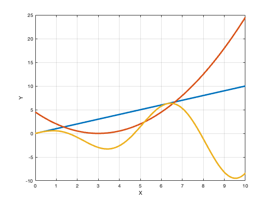
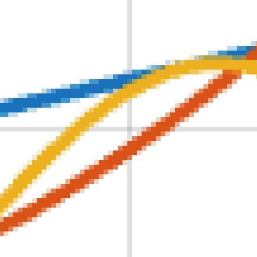
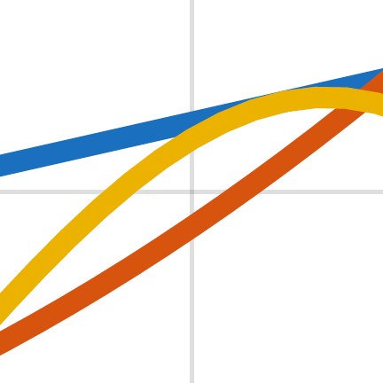

UnPlotter is a browser-based tool that extracts numerical data from vector plots in PDF files. The entire
process happens in your browser - your files are never uploaded to any server.
💡 Quick Start: Load a PDF → Enable Selection → Calibrate Axes → Select Curves
→ Export Data
Watch this video for a quick demonstration of UnPlotter in action.
⚠️ Important: UnPlotter only works with vector-based plots. Scanned images
or raster graphics in PDFs cannot be extracted.
Loading a PDF File
Step 1: Open UnPlotter
Click the "Start UnPlotter" button from the home page or click here.
Step 2: Load Your PDF
Click the "📁 Load PDF File" button
Select a PDF file from your computer
Wait for the PDF to load and render
Once loaded, you'll see the first page of your PDF displayed in the viewer.
Navigation & Viewing
Page Navigation
For multi-page PDFs, use the navigation controls:
⇦ Previous - Go to the previous page
⇨ Next - Go to the next page
Page indicator - Shows current page / total pages
Zoom Controls
Adjust the view to see details:
+ - Zoom in (increase size)
- - Zoom out (decrease size)
Zoom level - Shows current zoom percentage
Rotation Controls
Rotate the PDF view if needed:
↻ - Rotate clockwise (90°)
↺ - Rotate counter-clockwise (90°)
💡 Tip: You can click and drag on the canvas to pan around when zoomed in.
Axis Calibration
Calibration converts page coordinates from the PDF into real data values. This is a crucial step before
exporting data.
Step 1: Enable Selection Mode
Click the "Enable Selection" button in the side panel. This reveals the calibration
section.
Step 2: Calibrate X-Axis
Click the "Select" button next to the X axis
Click on a horizontal line that represents extent of the X-axis (or any horizontal
reference line)
Enter the minimum and maximum values for that line in the X Min
and X Max fields
The status indicator will show ✓ when complete.
Step 3: Calibrate Y-Axis
Click the "Select" button next to the Y axis
Click on a vertical line that represents extent of the Y-axis (or any vertical
reference line)
Enter the minimum and maximum values for that line in the Y Min
and Y Max fields
The status indicator will show ✓ when complete.
✅ Calibration Complete: When both axes are calibrated, you'll see "✅
Calibration Complete!" and the Export section will appear.
💡 Tip: For best results, select reference lines that span a large portion of
the plot area. Axis lines work best, but any line with known coordinates will work.
Selecting & Labeling Curves
Once selection mode is enabled, you can click on curves in the plot to extract them.
Selecting a Curve
Make sure "Enable Selection" is active (button should be highlighted)
Click directly on any curve in the plot
The selected curve will be highlighted on the canvas
Adding a Label
After selecting a curve, type a descriptive label in the text field (e.g., "Temperature",
"Pressure", "Dataset A")
Click the "Add" button or press Enter
The curve is now saved with its label and appears in the curve list
Managing Curves
View curve list - All labeled curves appear in the "Curves" section
Highlight curve - Click on a curve in the list to highlight it on the canvas
Delete curve - Click the ✕ button next to a curve to remove it
Delete all - Click "Delete All" to remove all labeled curves
💡 Tip: You can select and label multiple curves from the same plot. Each will
be exported as a separate dataset.
Exporting Data
Once you've calibrated the axes and labeled at least one curve, you can export your data.
Export Formats
CSV (Comma-Separated Values)
Universal format compatible with Excel, Google Sheets, MATLAB, Python, R, and more
Each curve is exported as three columns (Label, X, Y)
Perfect for spreadsheet applications and data analysis
JSON (JavaScript Object Notation)
Structured format ideal for programming and web applications
Contains metadata including curve labels and point counts
Easy to parse in JavaScript, Python, and other languages
Exporting Your Data
Scroll to the "Export Data" section (appears after calibration)
Preview your data in the preview window
Click "📄 Download CSV" or "📋 Download JSON"
The file will be saved to your downloads folder with a timestamp
📊 Data Preview: The export section shows a preview of the first 10 rows of
your data so you can verify it before downloading.
Tips & Best Practices
Getting the Best Results
Use vector PDFs - Make sure your PDF contains vector graphics, not scanned images
Zoom for precision - Zoom in when selecting thin lines or closely-spaced curves
Calibrate accurately - Use axis lines that span the full data range for best accuracy
Label descriptively - Use clear, meaningful labels that describe each curve
Check the preview - Always review the data preview before exporting
Process one plot at a time - Navigate to the correct page before extracting data
Vector vs. Raster Images
Computer image files are either vector or raster images. Vector images are made up of commands to draw lines
and curves, while raster images are made up of pixels.
UnPlotter only works with vector PDFs. Raster images cannot be processed.
Identifying Whether an Image is a Vector or Raster
The easiest way to tell if an image is a vector or a raster is to zoom in on it.

If it is a raster image, it will appear pixelated and blurry when zoomed in, like the image on the left. If
it is a vector image, it will appear smooth and sharp when zoomed in, like the image on the right.

Example raster image zoomed in

Example vector image zoomed in